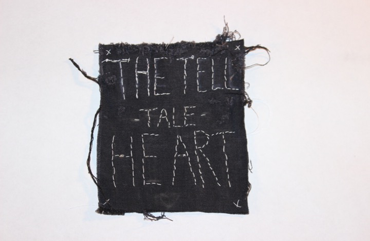
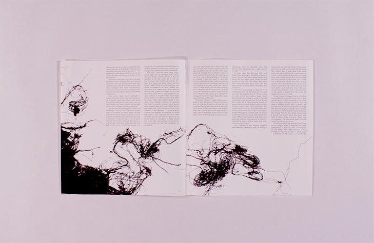
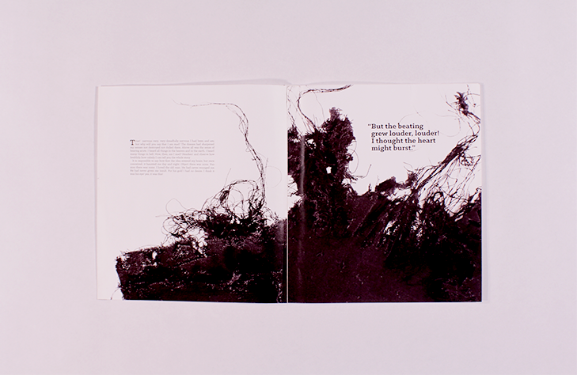

The objective of this project was to create an editorial spread based off, of a short story of choice and to integrate type and image in the visuals. I decided to select Edgar Allan Poe's "Tell Tale Heart" as the topic of my editorial. For my concept I decided to choose thread. A simple way of depicting a mad mans mind unraveling as he narrates his story.
  